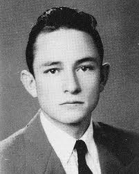

Cash nasceu no estado do Arkansas, filho de um fazendeiro pobre. Sua família mudou-se pouco depois para uma fazenda em Dyess, no mesmo estado. O pai de Cash era alcoólatra e abusava fisicamente e emocionalmente de seus filhos. Com cinco anos de idade, Cash começou a trabalhar em um campo de algodão, cantando com sua família enquanto cultivavam. Ele era muito próximo a Jack, seu irmão mais velho, e um acidente ocorrido em 1944 o afetaria pelo resto de sua vida. Jack foi puxado por uma serra de madeira no moinho em que trabalhava, sendo quase partido ao meio. Jack ainda sofreria uma semana antes de morrer. Cash sempre falou da enorme culpa que sentia pelo incidente porque tinha saído para pescar nesse dia. Em seu leito de morte, o jovem teve visões do céu e de anjos, e quase sessenta anos depois do acontecido Cash ainda falava esperar encontrar Jack no paraíso. Suas memórias de infância eram dominadas pela música gospel. Cash começou a tocar violão e a compor ainda jovem. Ele passou a ser chamado de "John" depois de entrar para a Força Aérea Americana (que recusava iniciais como nome). Antes disso ele era conhecido como Johnny ou John R. Enquanto servia na Alemanha, Cash compôs uma de suas músicas mais famosas, "Folsom Prison Blues".
Depois de ser dispensado, Cash casou-se com Vivian Liberto em 1954, com quem teria 4 filhas, mudou-se para Memphis, Tennessee, onde vendia ferramentas e estudava para ser locutor de rádio. Durante a noite, Cash tocava com o guitarrista Luther Perkins e o baixista Marshall Grant, enquanto criava coragem para visitar os estúdios da Sun Records para tentar conseguir um contrato. Um produtor da Sun, Cowboy Jack Clement, foi quem tratou com o jovem cantor da primeira vez, e sugeriu que Cash voltasse e conversasse com Sam Phillips. Depois de fazer um teste, cantando na maioria músicas gospel, Phillips disse à Cash para "voltar para casa e pecar, e depois voltar com uma música que eu possa vender". Cash conseqüentemente convenceria Clement e Phillips com suas canções frenéticas, e as gravações de "Hey Porter" e "Cry Cry Cry" (lançadas em 1955) tornou-se um dos destaques nas paradas de sucesso do Rock. No início da década seguinte, ele se divorcia de Vivian Liberto.
A gravação seguinte de Cash, "Folsom Prison Blues", entrou para o Top 5 do country e "I Walk the Line" conseguiu a primeira colocação na mesma parada de sucesso. Em 1957, Johnny Cash tornou-se o primeiro artista da Sun Records a lançar um álbum completo. Embora fosse o cantor mais prolífico e mais lucrativo da gravadora na época, Cash começou a se sentir limitado por seu contrato. Elvis Presley já havia deixado o selo, e Phillips estava focando sua atenção em promover Jerry Lee Lewis. No ano seguinte, Cash saiu da Sun e acertou com a Columbia Records depois de uma lucrativa proposta. Ali, seu compacto "Don't Take Your Guns to Town" tornou-se um de seus maiores sucessos.
Quando sua carreira começou a decolar no começo dos anos 60, Cash viciou-se em anfetaminas e barbitúricos. Seus amigos brincavam sobre seu "nervosismo" e comportamento estranho, ignorando os claros sinais de seu vício. Por um breve período, Cash dividiu um apartamento em Nashville com Waylon Jennings, também dependente de anfetaminas. Embora praticamente fora de controle, a criatividade frenética de Cash ainda conseguia criar hits. Sua "Ring of Fire" foi um tremendo sucesso, alcançando o primeiro lugar nas paradas country e entrando no Top 20 de canções pop. Co-escrita por June Carter e Merle Kilgore e originalmente cantada pela irmã de Carter, a música teve seu arranjo de trompete composto por Cash, que disse tê-lo ouvido durante um sonho.Embora Cash cultivasse cuidadosamente sua imagem romântica de fora-da-lei, muitos fãs ainda se surpreendem ao saber que ele nunca cumpriu pena na prisão, apesar de sua selvageria e mau comportamento terem rendido a ele algumas noites na cadeia. O problema mais sério de Cash com a lei foi em 1965 quando um esquadrão antinarcóticos em El Paso, Texas, o pegou em flagrante. Os oficiais pensavam que Cash trazia heroína do México, mas na verdade eram apenas anfetaminas, escondidas na caixa de seu violão. Cash também foi preso no ano seguinte em Starkville, Mississippi, ao invadir propriedade privada para apanhar flores. O mais notável foi que Cash voluntariamente ia a diversas prisões para tocar para os presos, pelos quais ele sentia imensa compaixão.
Os problemas pessoais e os desastres seguiram Cash em sua nova casa em Old Hickory Lake, Handersonville, Tennessee. A casa de seu vizinho e grande amigo, Roy Orbison, desabou, com a morte de dois dos seus três filhos caçulas. Cash foi profundamente afetado por esses incidentes, e decidiu começar a longa e difícil jornada rumo à reabilitação. Ele se trancou em casa para tentar se desintoxicar, contando com o apoio irrestrito dos amigos e da que se tornaria sua esposa nos próximos anos, June Carter. A balada romântica "Flesh and Blood" foi uma das primeiras de inúmeras músicas que Cash dedicaria à sua amada.
Com a ajuda da esposa e influenciado por uma conversão religiosa alcançada depois de uma tentativa fracassada de suicídio, Cash começou a batalha contra o vício. Nos dois anos seguintes ele gravaria e lançaria seus dois álbuns ao vivo mais bem-sucedidos, Johnny Cash at Folsom Prison, de 1968 e Johnny Cash at San Quentin, de 1969, mesmo ano do nascimento de seu primeiro e único filho homem, John Carter Cash.
Em 1999 Cash foi diagnosticado com Síndrome de Shy-Drager, uma doença neuro-degenerativa - diagnóstico que mais tarde seria alterado para problemas no sistema nervoso associados à diabetes. Seu estado de saúde o forçou a encurtar uma turnê; ele foi hospitalizado em 1998 com grave pneumonia, que prejudicou seus pulmões. O álbum American III: Solitary Man, lançado em 2000, apresentava sua resposta à doença, representada por uma versão de "I Won't Back Down" de Tom Petty assim como uma releitura poderosa de "One", do U2.Cash lançou American IV: The Man Comes Around em 2002, que consistia metade de material original e metade de covers, algumas bem surpreendentes. O videoclipe de "Hurt", canção composta por Trent Reznor do Nine Inch Nails, foi indicada em sete categorias do Video Music Awards da MTV, ganhando o prêmio de "Melhor Fotografia". Em 2004 "Hurt" também venceu o Grammy de "Melhor Videoclipe" e em 2011 foi considerado pela revista billboard como o melhor clipe de todos os tempos.A esposa de Johnny, June Carter, faleceu de complicações decorrentes de uma cirurgia do coração em 15 de maio de 2003, aos 73 anos de idade.Menos de quatro meses depois Johnny Cash morreu devido ao diabetes aos 71 anos de idade enquanto estava hospitalizado no Baptist Hospital em Nashville, Tennessee. Ele foi enterrado ao lado de sua esposa no Hendersonville Memory Gardens, perto de sua terra natal, Hendersonville, Tennessee.
Desde seus primórdios como um pioneiro do rockabilly e rock and roll nos anos 50 à sua transformação em um representante internacional da música country e até sua reconquista da fama nos anos 90 tanto como uma lenda viva como ícone do country alternativo, Cash influenciou incontáveis músicos e deixou um trabalho igualado apenas pelos maiores artistas de sua época.
Cash promovia e defendia os artistas que beiravam os limites do que era aceitável na música country, mesmo enquanto era o símbolo mais conhecido do estilo. Em um concerto em 2002 vários astros prestaram-no tributo, incluindo Bob Dylan, Chris Isaak, Wyclef Jean, Norah Jones, Willie Nelson e U2. Dois discos-tributo foram lançados pouco depois de sua morte: Kindred Spirits, com trabalhos de artistas famosos, e Dressed In Black, com versões de músicos menos conhecidos.
Embora ele tenha composto mais de uma centena de músicas e lançado dúzias de álbuns, o trabalho criativo de Cash não conseguiu ser silenciado por sua morte. Um box set, intitulado Unearthed, foi lançado postumamente. Incluía quatro CDs de matérial inédito gravado com Rubin, assim como um CD retrospectivo, nestes cds constam versões de músicas de Bob Marley, Cat Stevens, Simon and Garfunkel, sendo que um dos quatro cds de músicas inéditas trata-se de um álbum gospel, onde interpreta canções religiosas que sua mãe cantava para ele quando criança, conta ainda com Best of Cash on American. Johnny Cash American V: A Hundred Highways, com mais material das sessões com Rubin, foi lançado em 4 de Julho de 2006, trazendo canções do próprio Cash e mais covers de Bruce Springsteen e Hank Williams e chegou ao topo da parada da Billboard - o primeiro álbum de Cash a alcançar este posto desde "Johnny Cash at San Quentin" de 1969. Em 23 de Fevereiro de 2010 (três dias antes da data em que Cash faria 78 anos) saiu "American VI: Ain't No Grave", anunciado como contendo de fato as últimas gravações de Johnny Cash, que incluíam covers de Sheryl Crow e Claude Ely e músicas antes gravadas por Elvis Presley e Hank Snow.
Em 2005 foi lançado o filme Walk the Line (no Brasil Johnny & June) com Joaquin Phoenix no papel de Cash e Reese Witherspoon como June Carter, dirigido por James Mangold, uma biografia filmada. Filme que recebeu o Oscar de melhor atriz para Witherspoon e uma indicação de melhor ator para Joaquin Phoenix.
Em 2006, o quadrinhista alemão Reinhard Kleist lançou "Cash - I see a darkness", biografia em quadrinhos de Johnny Cash, abrangendo as décadas de 1950 e 1960, mostrando o início da carreira do cantor. O livro recebeu diversos prêmios, dentre os quais o de Melhor Graphic Novel alemã de 2008. Em outubro de 2009, o livro ganha sua edição em português, chamada "Johnny Cash - uma biografia" no Brasil, pela editora porto-alegrense 8INVERSO. A Música 'Til Kingdom Come do álbum X&Y do Coldplay, lançado em 2005, foi escrita especialmente para que ele interpretasse. Contudo, ele morreu antes de ter a chance de entrar no estúdio.
Oito anos após sua morte, seu videoclipe "Hurt", uma reinterpretação do sucesso do Nine Inch Nails, foi considerado pela New Musical Express (NME), uma das mais tradicionais e importantes revistas de músicas do mundo, como o melhor videoclipe de todos os tempos.
A banda brasileira Matanza lançou em 2005 o álbum To Hell With Johnny Cash, só de covers em homenagem a Johnny Cash de quem eles são grandes fãs e atribuem grande influencia em seu estilo musical.
Para mais informações visite o Site Oficial.